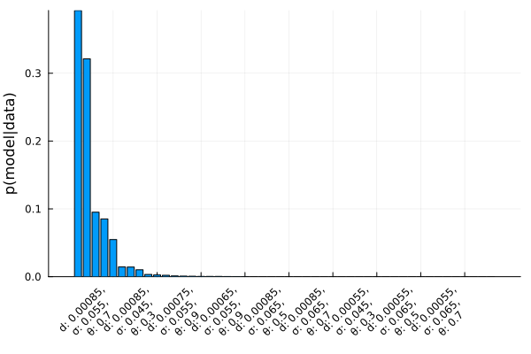
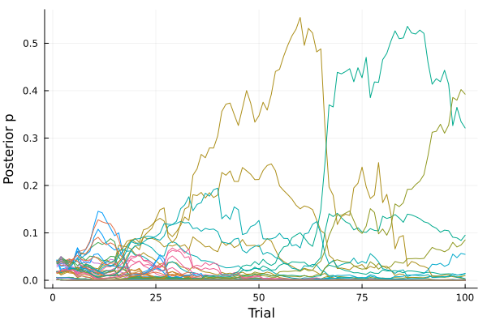
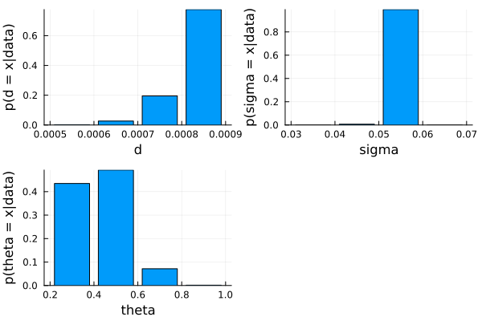
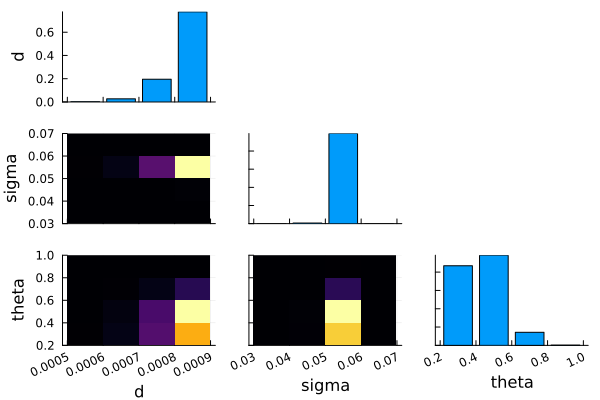
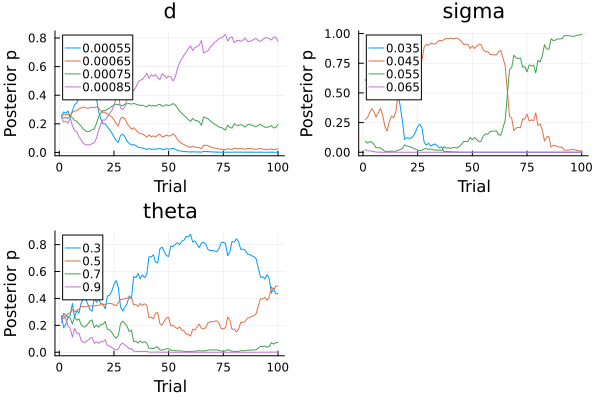
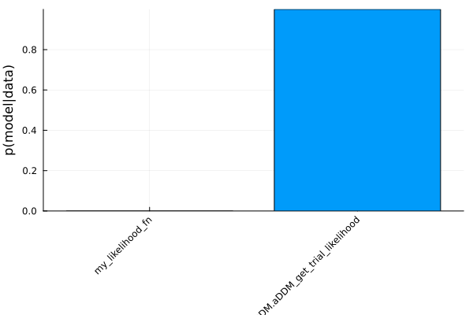
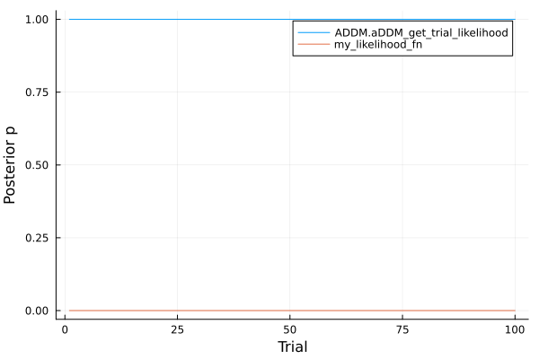

Model comparison
The parameter combination that has the highest likelihood to have generated a given dataset (the maximum likelihood estimate) is often what is used in downstream analyses and related to other variables of interest. While a fast estimation these parameters is therefore very useful, it is valueable to get a sense of the uncertainty associated with the estimation as well. In this tutorial we introduce some of the toolbox's capabilities to assess this.
When estimating the best-fitting parameters for a model (aDDM or otherwise) our ability to recover them is always limited to the parameter space we explore. Therefore, any computation of the uncertainty associated with specific parameters values is only with respect to other values that we have tried.
In other words, the uncertainty is not some divine measure that accounts for all possible models. It is a comparative measure that tells us how much better a specific combination of parameters is, compared to other combinations in the parameter space we have defined. In this toolbox, we make the parameter space explicit by specifying the grid (param_grid) in the ADDM.grid_search function.
The uncertainty associated with each parameter value and/or parameter combination is quantified as a probability distribution. Specifically, a posterior probability distribution that reflects both the prior beliefs on how likely each parameter value is and how much to update them based on the evidence each trial provides in favor of a parameter combination.
Comparing parameters of a single generative processes
In this section we will demonstrate how to compute posterior probabilities associated with each parameter combination and each parameter type for a single generative process. A generative process, in this context, refers to the computational model we believe gives rise to observable data (in this case, choices and response times). Here, we compute the uncertainty over different parameter combinations of one specific computational model, the standard aDDM. In the next section we compute the uncertainty over different computational models, accounting for the uncertainty within the parameter spaces of each model.
Posterior model probability
We begin with importing the packages that will be used in this tutorial.
julia> using ADDM, CSV, DataFrames, DataFramesMeta, Distributed, Distributions, LinearAlgebra, StatsPlots
The toolbox comes with a subset of the data from Krajbich et al. (2010). In this tutorials we will use data from a single subject from this dataset.
julia> krajbich_data = ADDM.load_data_from_csv(data_path * "Krajbich2010_behavior.csv", data_path * "Krajbich2010_fixations.csv");julia> subj_data = krajbich_data["18"];
To examine the uncertainty associated with each parameter and their combinations we introduce the return_model_posteriors argument when running ADDM.grid_search, which expands the output to include a trial_posteriors dictionary. trial_posteriors is indexed by the keys of param_grid as indicators of different parameter combinations and contains the posterior probability for each key after each trial as its values.
julia> fn = data_path * "Krajbich_grid3.csv";julia> tmp = DataFrame(CSV.File(fn, delim=","));julia> param_grid = NamedTuple.(eachrow(tmp));julia> my_likelihood_args = (timeStep = 10.0, stateStep = 0.01);julia> output = ADDM.grid_search(subj_data, param_grid, ADDM.aDDM_get_trial_likelihood, Dict(:η=>0.0, :barrier=>1, :decay=>0, :nonDecisionTime=>0, :bias=>0.0), likelihood_args=my_likelihood_args, return_grid_nlls = true, return_trial_posteriors = true, return_model_posteriors = true);julia> mle = output[:mle];julia> nll_df = output[:grid_nlls];julia> trial_posteriors = output[:trial_posteriors];julia> model_posteriors = output[:model_posteriors];
model_posteriors contains the posterior probability associated with each model (i.e. parameter combination) for the set of models that were fit. Since it is a probability distribution it must sum to 1. In other words, the posterior probabilities associated with the models would change if they were being compared to different combinations of parameters, because they would be renormalized with respect to a different set of likelihoods.
Model posteriors
The model_posteriors variable is a dictionary indexed by the parameter combination as listed in the param_grid. Here, we convert that model_posteriors dictionary to a dataframe so it is easier to make plots with.
julia> posteriors_df1 = DataFrame();julia> for (k, v) in model_posteriors cur_row = DataFrame([k]) cur_row.posterior = [v] posteriors_df1 = vcat(posteriors_df1, cur_row, cols=:union) end;
Now we can visualize the posterior probability for each parameter combination.
DataFrameMeta.jl provides functionality similar to the R package dplyr (e.g. @chain is similar to a piping operation and @rsubset to select.
Below we're only plotting the posteriors for models that have a meaningful amount of probability mass instead of all the models that were tested by excluding rows without a posterior probability greater than 1e-10.
julia> plot_df = @chain posteriors_df1 begin @rsubset :posterior > 1e-10 @rtransform :x_label = "d: " * string(:d) * ", \nσ: " * string(:sigma) * ", \nθ: " * string(:theta) @orderby -:posterior end;julia> sort(posteriors_df1, :posterior, rev=true)64×4 DataFrame Row │ d sigma theta posterior │ Float64 Float64 Float64 Float64 ─────┼──────────────────────────────────────── 1 │ 0.00085 0.055 0.5 0.392581 2 │ 0.00085 0.055 0.3 0.321245 3 │ 0.00075 0.055 0.3 0.0950647 4 │ 0.00075 0.055 0.5 0.0851215 5 │ 0.00085 0.055 0.7 0.0547531 6 │ 0.00065 0.055 0.3 0.0143631 7 │ 0.00075 0.055 0.7 0.0141713 8 │ 0.00065 0.055 0.5 0.0102092 ⋮ │ ⋮ ⋮ ⋮ ⋮ 58 │ 0.00085 0.035 0.9 1.08703e-22 59 │ 0.00075 0.035 0.9 2.7816e-23 60 │ 0.00055 0.035 0.3 6.43983e-24 61 │ 0.00055 0.035 0.5 5.07393e-24 62 │ 0.00065 0.035 0.9 1.53731e-24 63 │ 0.00055 0.035 0.7 7.14635e-25 64 │ 0.00055 0.035 0.9 1.83497e-26 49 rows omitted
julia> @df plot_df bar(:x_label, :posterior, legend = false, xrotation = 45, ylabel = "p(model|data)",bottom_margin = (5, :mm))Plot{Plots.GRBackend() n=1}

Trialwise changes to the model posteriors
The ADDM.grid_search function's return_trial_posteriors argument returns the discretized posterior distribution for each model after each trial/observation. This allows us to examine how the posterior distribution changes accounting for increasing amounts of data. The trial_posteriors key of the grid_search output is organized as a dictionary with keys indicating parameter combinations from param_grid and values are nested dictionaries mapping trial numbers to posterior probabilities.
To do so, first we rangle the trial_posteriors into a data frame for easier visualization.
julia> # Initialize empty df trial_posteriors_df = DataFrame();julia> nTrials = length(subj_data)100julia> for i in 1:nTrials # Get the posterior for each model after the curent trial cur_trial_posteriors = DataFrame(keys(trial_posteriors)) cur_trial_posteriors[!, :posterior] = [x[i] for x in values(trial_posteriors)] # Add the trial information cur_trial_posteriors[!, :trial_num] .= i # Add the current trial posterior to the initialized df trial_posteriors_df = vcat(trial_posteriors_df, cur_trial_posteriors, cols=:union) end;julia> @transform!(trial_posteriors_df, @byrow :modelnum = string(:d) * string(:sigma) * string(:theta))6400×6 DataFrame Row │ d sigma theta posterior trial_num modelnum │ Float64 Float64 Float64 Float64 Int64 String ──────┼──────────────────────────────────────────────────────────────────── 1 │ 0.00055 0.035 0.9 0.0366842 1 0.000550.0350.9 2 │ 0.00065 0.035 0.7 0.0382042 1 0.000650.0350.7 3 │ 0.00075 0.045 0.3 0.0188203 1 0.000750.0450.3 4 │ 0.00065 0.055 0.9 0.00551948 1 0.000650.0550.9 5 │ 0.00065 0.035 0.3 0.0411853 1 0.000650.0350.3 6 │ 0.00065 0.035 0.5 0.0404291 1 0.000650.0350.5 7 │ 0.00065 0.065 0.9 0.00139241 1 0.000650.0650.9 8 │ 0.00075 0.045 0.9 0.0153804 1 0.000750.0450.9 ⋮ │ ⋮ ⋮ ⋮ ⋮ ⋮ ⋮ 6394 │ 0.00065 0.065 0.5 6.53903e-7 100 0.000650.0650.5 6395 │ 0.00055 0.035 0.5 5.07393e-24 100 0.000550.0350.5 6396 │ 0.00075 0.045 0.7 3.98117e-5 100 0.000750.0450.7 6397 │ 0.00085 0.035 0.9 1.08703e-22 100 0.000850.0350.9 6398 │ 0.00055 0.065 0.9 4.03303e-9 100 0.000550.0650.9 6399 │ 0.00075 0.045 0.5 0.000381812 100 0.000750.0450.5 6400 │ 0.00065 0.065 0.3 8.54979e-7 100 0.000650.0650.3 6385 rows omitted
Then, plot changes to posteriors of each model across trials. Note, we have omitted a legend indicating the parameters associated with each line in the plot below to avoid over-crowding the plot. This is meant only as an intial exploration into how the conclusions about the best model vary with increased evidence from each trial.
julia> @df trial_posteriors_df plot( :trial_num, :posterior, group = :modelnum, xlabel = "Trial", ylabel = "Posterior p", legend = false )Plot{Plots.GRBackend() n=64}

Parameter posteriors
The model_posteriors dictionary contains the probability distribution associated with each parameter combination. The ADDM.marginal_posteriors function summarizes this by collapsing over levels of different parameters. Below, we first summarize the distribution for each of the three parameters separately.
julia> param_posteriors = ADDM.marginal_posteriors(model_posteriors);julia> plot_array = Any[];julia> for plot_df in param_posteriors x_lab = names(plot_df)[1] cur_plot = @df plot_df bar(plot_df[:, x_lab], :posterior_sum, leg = false, ylabel = "p(" * x_lab * " = x|data)", xlabel = x_lab ) push!(plot_array, cur_plot) end;julia> plot(plot_array...)Plot{Plots.GRBackend() n=3}

We can also use the ADDM.marginal_posteriors function to compute parameter posteriors with respect to each other by specifying the second positional argument. When set to true, the ADDM.marginal_posteriors function returns pairwise marginal distributions that can be plotted as heatmaps to visualize conditional distributions of the parameters.
julia> all_marginal_posteriors = ADDM.marginal_posteriors(model_posteriors, two_d_marginals = true)6-element Vector{Any}: 4×2 DataFrame Row │ d posterior_sum │ Float64 Float64 ─────┼──────────────────────── 1 │ 0.00055 0.00197559 2 │ 0.00065 0.0268011 3 │ 0.00075 0.195637 4 │ 0.00085 0.775586 4×2 DataFrame Row │ sigma posterior_sum │ Float64 Float64 ─────┼──────────────────────── 1 │ 0.035 9.57592e-18 2 │ 0.045 0.00696685 3 │ 0.055 0.993005 4 │ 0.065 2.82679e-5 4×2 DataFrame Row │ theta posterior_sum │ Float64 Float64 ─────┼──────────────────────── 1 │ 0.9 0.00147894 2 │ 0.7 0.0714554 3 │ 0.3 0.434736 4 │ 0.5 0.49233 16×3 DataFrame Row │ d sigma posterior_sum │ Float64 Float64 Float64 ─────┼───────────────────────────────── 1 │ 0.00055 0.035 1.22467e-23 2 │ 0.00065 0.035 4.40377e-21 3 │ 0.00075 0.045 0.000826574 4 │ 0.00065 0.055 0.0267524 5 │ 0.00065 0.065 1.70294e-6 6 │ 0.00085 0.045 0.00609219 7 │ 0.00075 0.055 0.194803 8 │ 0.00075 0.065 7.17705e-6 9 │ 0.00055 0.045 1.10675e-6 10 │ 0.00075 0.035 3.97713e-19 11 │ 0.00085 0.055 0.769475 12 │ 0.00065 0.045 4.69828e-5 13 │ 0.00085 0.065 1.91349e-5 14 │ 0.00055 0.065 2.53055e-7 15 │ 0.00055 0.055 0.00197423 16 │ 0.00085 0.035 9.17379e-18 16×3 DataFrame Row │ d theta posterior_sum │ Float64 Float64 Float64 ─────┼───────────────────────────────── 1 │ 0.00055 0.9 1.71243e-5 2 │ 0.00065 0.7 0.00206368 3 │ 0.00075 0.3 0.0954724 4 │ 0.00065 0.9 0.000119287 5 │ 0.00065 0.3 0.0143895 6 │ 0.00065 0.5 0.0102286 7 │ 0.00075 0.9 0.000446247 8 │ 0.00085 0.7 0.0550113 9 │ 0.00075 0.7 0.0142119 10 │ 0.00085 0.3 0.323762 11 │ 0.00075 0.5 0.0855065 12 │ 0.00085 0.5 0.395917 13 │ 0.00055 0.7 0.000168505 14 │ 0.00085 0.9 0.000896282 15 │ 0.00055 0.5 0.000678258 16 │ 0.00055 0.3 0.00111171 16×3 DataFrame Row │ sigma theta posterior_sum │ Float64 Float64 Float64 ─────┼───────────────────────────────── 1 │ 0.035 0.9 1.38075e-22 2 │ 0.035 0.7 2.13653e-19 3 │ 0.045 0.3 0.00293996 4 │ 0.055 0.9 0.00147704 5 │ 0.035 0.3 2.98907e-18 6 │ 0.035 0.5 6.37305e-18 7 │ 0.065 0.9 1.47174e-7 8 │ 0.045 0.9 1.74939e-6 9 │ 0.045 0.7 0.000298579 10 │ 0.055 0.7 0.0711537 11 │ 0.055 0.3 0.431784 12 │ 0.065 0.5 1.35042e-5 13 │ 0.045 0.5 0.00372656 14 │ 0.065 0.7 3.0881e-6 15 │ 0.055 0.5 0.48859 16 │ 0.065 0.3 1.15284e-5
The toolbox includes a visualization function, ADDM.marginal_posterior_plot that creates a grid of plots with individual parameter posteriors on the diagonal and the conditional posteriors as heatmaps below the diagonal.
julia> ADDM.marginal_posterior_plot(all_marginal_posteriors)Plot{Plots.GRBackend() n=6}

Trialwise changes to the parameter posteriors
Similar to trialwise changes for combinations of parameters, we can also examine trialwise changes to marginalized posteriors for each individual parameter as well. Here we do so by using ADDM.marginal_posteriors for each entry in trial_posteriors.
julia> # Initialize empty df trial_param_posteriors = DataFrame();julia> for i in 1:nTrials # Get the posterior for each model after the curent trial cur_trial_posteriors = Dict(zip(keys(trial_posteriors), [x[i] for x in values(trial_posteriors)])) # Use built-in function to marginalize for each parameter cur_param_posteriors = ADDM.marginal_posteriors(cur_trial_posteriors) # Wrangle the output to be a single df and add trial number info for j in 1:length(cur_param_posteriors) df = cur_param_posteriors[j][:,:] #assign a copy df[!, :par_name] .= names(df)[1] df[!, :trial_num] .= i rename!(df, Symbol(names(df)[1]) => :par_value) trial_param_posteriors = vcat(trial_param_posteriors, df, cols=:union) end end
Plot trialwise marginal posteriors for each parameter
julia> par_names = unique(trial_param_posteriors[:,:par_name]);julia> plot_array = Any[];julia> for cur_par_name in par_names plot_df = @rsubset(trial_param_posteriors, :par_name == cur_par_name) cur_plot = @df plot_df plot( :trial_num, :posterior_sum, group = :par_value, title = cur_par_name, xlabel = "Trial", ylabel = "Posterior p", ) push!(plot_array, cur_plot) endjulia> plot(plot_array...)Plot{Plots.GRBackend() n=12}

Comparing different generative processes
Aside from comparing different parameter combinations for a single model, we can also compare how likely one computational model is compared to another, in generating the observed data. Since any specific value of a given parameter involves uncertainty as we computed above, we need to account for this when comparing different generative processes to each other.
This again involves computing the comparative advantage, the posterior probability, for each point in the parameter space that we examine, which contains both the parameters within each model, and which model they belong to.
Here, we'll use the same participant's data from before and examine if it can be explained better by a standard aDDM (that we fit above) or another model where the boundaries of the evidence accummulation decay exponentially throughout the decision. This model is detailed further in the Defining custom models tutorial.
The comparison of these two generative processes is operationalized by specifying them in the same param_grid as we had previously used to specify different values for the parameters of a single generative process. In this case, we add the information on which generative process the parameter combination belongs to in a new key called likelihood_fn.
First we read in the file that defines the parameter space for the first model, the standard aDDM.
julia> fn1 = data_path * "Krajbich_grid3.csv";julia> tmp = DataFrame(CSV.File(fn1, delim=","));julia> tmp.likelihood_fn .= "ADDM.aDDM_get_trial_likelihood";julia> param_grid1 = NamedTuple.(eachrow(tmp));
Then we define the likelihood function for the second model. We do this by reading in a custom function we have defined in a separate script. This script includes a function called my_likelihood_fn. We will use this function name string when defining the parameter space.
@everywhere is a macro defined by Distributed.jl. It ensures that the likelihood function is available to all processes when parallelizing computations.
julia> @everywhere include(data_path * "my_likelihood_fn.jl");ERROR: TaskFailedException nested task error: UndefVarError: `data_path` not defined Stacktrace: [1] top-level scope @ none:1 [2] eval @ ./boot.jl:370 [inlined] [3] (::Distributed.var"#172#174"{Module, Expr})() @ Distributed ./task.jl:514
Now we define the parameter space we will examine for the second model. In addition to the parameter values we also include my_likelihood_fn as a string in param_grid so ADDM.grid_search knows which generative process to use when computing the trial likelihoods for the parameter combinations of the second model.
julia> fn2 = data_path * "custom_model_grid.csv";julia> tmp = DataFrame(CSV.File(fn2, delim=","));julia> tmp.likelihood_fn .= "my_likelihood_fn";julia> param_grid2 = NamedTuple.(eachrow(tmp));
Now that we have defined the parameter space for both models, we combine them both in a single param_grid, over which we'll compute the posterior distribution.
julia> param_grid = vcat(param_grid1, param_grid2)145-element Vector{NamedTuple}: (d = 0.00055, sigma = 0.035, theta = 0.3, likelihood_fn = "ADDM.aDDM_get_trial_likelihood") (d = 0.00065, sigma = 0.035, theta = 0.3, likelihood_fn = "ADDM.aDDM_get_trial_likelihood") (d = 0.00075, sigma = 0.035, theta = 0.3, likelihood_fn = "ADDM.aDDM_get_trial_likelihood") (d = 0.00085, sigma = 0.035, theta = 0.3, likelihood_fn = "ADDM.aDDM_get_trial_likelihood") (d = 0.00055, sigma = 0.045, theta = 0.3, likelihood_fn = "ADDM.aDDM_get_trial_likelihood") (d = 0.00065, sigma = 0.045, theta = 0.3, likelihood_fn = "ADDM.aDDM_get_trial_likelihood") (d = 0.00075, sigma = 0.045, theta = 0.3, likelihood_fn = "ADDM.aDDM_get_trial_likelihood") (d = 0.00085, sigma = 0.045, theta = 0.3, likelihood_fn = "ADDM.aDDM_get_trial_likelihood") (d = 0.00055, sigma = 0.055, theta = 0.3, likelihood_fn = "ADDM.aDDM_get_trial_likelihood") (d = 0.00065, sigma = 0.055, theta = 0.3, likelihood_fn = "ADDM.aDDM_get_trial_likelihood") ⋮ (d = 0.003, sigma = 0.01, theta = 0.9, lambda = 0.1, likelihood_fn = "my_likelihood_fn") (d = 0.007, sigma = 0.01, theta = 0.9, lambda = 0.1, likelihood_fn = "my_likelihood_fn") (d = 0.014, sigma = 0.01, theta = 0.9, lambda = 0.1, likelihood_fn = "my_likelihood_fn") (d = 0.003, sigma = 0.03, theta = 0.9, lambda = 0.1, likelihood_fn = "my_likelihood_fn") (d = 0.007, sigma = 0.03, theta = 0.9, lambda = 0.1, likelihood_fn = "my_likelihood_fn") (d = 0.014, sigma = 0.03, theta = 0.9, lambda = 0.1, likelihood_fn = "my_likelihood_fn") (d = 0.003, sigma = 0.07, theta = 0.9, lambda = 0.1, likelihood_fn = "my_likelihood_fn") (d = 0.007, sigma = 0.07, theta = 0.9, lambda = 0.1, likelihood_fn = "my_likelihood_fn") (d = 0.014, sigma = 0.07, theta = 0.9, lambda = 0.1, likelihood_fn = "my_likelihood_fn")
With this expanded param_grid that includes information on the different likelihood functions we call the ADDM.grid_search function setting the third position argument to nothing. This argument is where we define the likelihood function in the case of a single model but now this is specified in the param_grid.
julia> my_likelihood_args = (timeStep = 10.0, stateStep = 0.01);julia> output = ADDM.grid_search(subj_data, param_grid, nothing, Dict(:η=>0.0, :barrier=>1, :decay=>0, :nonDecisionTime=>0, :bias=>0.0), likelihood_args = my_likelihood_args, return_grid_nlls = true, return_trial_posteriors = true, return_model_posteriors = true);ERROR: UndefVarError: `my_likelihood_fn` not definedjulia> mle = output[:mle]Dict{Symbol, Real} with 13 entries: :barrier => 1 :decay => 0 :timeStep => 10.0 :nonDecisionTime => 0 :σ => 0.055 :sigma => 0.055 :η => 0.0 :bias => 0.0 :d => 0.00085 :nll => 689.553 :θ => 0.5 :stateStep => 0.01 :theta => 0.5julia> nll_df = output[:grid_nlls]64×4 DataFrame Row │ d sigma theta nll │ Float64 Float64 Float64 Float64 ─────┼──────────────────────────────────── 1 │ 0.00055 0.035 0.9 747.878 2 │ 0.00065 0.035 0.7 738.646 3 │ 0.00075 0.045 0.3 696.431 4 │ 0.00065 0.055 0.9 697.652 5 │ 0.00065 0.035 0.3 736.227 6 │ 0.00065 0.035 0.5 736.226 7 │ 0.00065 0.065 0.9 706.505 8 │ 0.00075 0.045 0.9 703.184 ⋮ │ ⋮ ⋮ ⋮ ⋮ 58 │ 0.00065 0.065 0.5 702.858 59 │ 0.00055 0.035 0.5 742.256 60 │ 0.00075 0.045 0.7 698.749 61 │ 0.00085 0.035 0.9 739.191 62 │ 0.00055 0.065 0.9 707.946 63 │ 0.00075 0.045 0.5 696.488 64 │ 0.00065 0.065 0.3 702.59 49 rows omittedjulia> trial_posteriors = output[:trial_posteriors];julia> model_posteriors = output[:model_posteriors];
As before, we create a dataframe containing the model_posteriors for visualization purposes.
julia> posteriors_df2 = DataFrame();julia> for (k, v) in model_posteriors cur_row = DataFrame([k]) cur_row.posterior = [v] posteriors_df2 = vcat(posteriors_df2, cur_row, cols=:union) end;
We can take a look at the most likely parameter combinations across the generative processes.
julia> sort(posteriors_df2, :posterior, rev=true)64×4 DataFrame Row │ d sigma theta posterior │ Float64 Float64 Float64 Float64 ─────┼──────────────────────────────────────── 1 │ 0.00085 0.055 0.5 0.392581 2 │ 0.00085 0.055 0.3 0.321245 3 │ 0.00075 0.055 0.3 0.0950647 4 │ 0.00075 0.055 0.5 0.0851215 5 │ 0.00085 0.055 0.7 0.0547531 6 │ 0.00065 0.055 0.3 0.0143631 7 │ 0.00075 0.055 0.7 0.0141713 8 │ 0.00065 0.055 0.5 0.0102092 ⋮ │ ⋮ ⋮ ⋮ ⋮ 58 │ 0.00085 0.035 0.9 1.08703e-22 59 │ 0.00075 0.035 0.9 2.7816e-23 60 │ 0.00055 0.035 0.3 6.43983e-24 61 │ 0.00055 0.035 0.5 5.07393e-24 62 │ 0.00065 0.035 0.9 1.53731e-24 63 │ 0.00055 0.035 0.7 7.14635e-25 64 │ 0.00055 0.035 0.9 1.83497e-26 49 rows omitted
The posterior probability associated with the standard model for parameters d = 0.00085, sigma = 0.055 and theta = 0.5 is not the same as what it was when comparing the parameter combinations for a single generative process in the first section of this tutorial. Now, this posterior is normalized not only over the parameter combinations of the standard model but also over all the combinations that we examined for the alternative model.
julia> sort(posteriors_df1, :posterior, rev=true)[1,:posterior] == sort(posteriors_df2, :posterior, rev=true)[1,:posterior]true
We can also collapse the posterior distribution across the generative processes and compare how much better one processes is compared to the other in giving rise to the observed data.
julia> gdf = groupby(posteriors_df2, :likelihood_fn);ERROR: ArgumentError: column name :likelihood_fn not found in the data framejulia> combdf = combine(gdf, :posterior => sum);ERROR: UndefVarError: `gdf` not definedjulia> @df combdf bar(:likelihood_fn, :posterior_sum, legend = false, xrotation = 45, ylabel = "p(model|data)",bottom_margin = (5, :mm))ERROR: UndefVarError: `combdf` not defined

We can check how this conclusion evolved with the addition of each trial.
julia> # Initialize empty df trial_model_posteriors = DataFrame();julia> for i in 1:nTrials # Get the posterior for each model after the curent trial cur_trial_posteriors = Dict(zip(keys(trial_posteriors), [x[i] for x in values(trial_posteriors)])) cur_trial_posteriors = DataFrame(model_num = collect(keys(cur_trial_posteriors)), posterior = collect(values(cur_trial_posteriors))) @transform!(cur_trial_posteriors, @byrow :likelihood_fn = :model_num.likelihood_fn) gdf = groupby(cur_trial_posteriors, :likelihood_fn) cur_trial_posteriors = combine(gdf, :posterior => sum) # Add the trial information cur_trial_posteriors[!, :trial_num] .= i # Add the current trial posterior to the initialized df trial_model_posteriors = vcat(trial_model_posteriors, cur_trial_posteriors, cols=:union) end;ERROR: type NamedTuple has no field likelihood_fnjulia> @df trial_model_posteriors plot( :trial_num, :posterior_sum, group = :likelihood_fn, xlabel = "Trial", ylabel = "Posterior p", legend = true )ERROR: MethodError: no method matching _extract_group_attributes(::Symbol, ::Symbol, ::Symbol) Closest candidates are: _extract_group_attributes(::AbstractVector, ::Any...; legend_entry) @ RecipesPipeline ~/.julia/packages/RecipesPipeline/BGM3l/src/group.jl:10 _extract_group_attributes(::Tuple, ::Any...) @ RecipesPipeline ~/.julia/packages/RecipesPipeline/BGM3l/src/group.jl:27 _extract_group_attributes(::NamedTuple, ::Any...) @ RecipesPipeline ~/.julia/packages/RecipesPipeline/BGM3l/src/group.jl:36 ...

Priors about models
Suppose we had very strong prior beliefs about two of the models in our parameter space. We specify this belief as a probability of .495 for two models and assign the remaining probability mass to all other models.
Important:
- Make sure the keys of the model priors dictionary has the same keys for all models (
ADDM.match_param_grid_keys). - Make sure there is some probability mass for all models (i.e. all values in model priors dictionary should be larger than 0.).
- Make sure that the values of model priors sum up to 1 (i.e. so it a proper probability distribution).
This is not a good example to demonstrate the effect of priors because the evidence against the custom model is too strong immediately after the first trial.
julia> param_grid = ADDM.match_param_grid_keys(param_grid)145-element Vector{Any}: (d = 0.00055, sigma = 0.035, theta = 0.3, likelihood_fn = "ADDM.aDDM_get_trial_likelihood", lambda = "NA") (d = 0.00065, sigma = 0.035, theta = 0.3, likelihood_fn = "ADDM.aDDM_get_trial_likelihood", lambda = "NA") (d = 0.00075, sigma = 0.035, theta = 0.3, likelihood_fn = "ADDM.aDDM_get_trial_likelihood", lambda = "NA") (d = 0.00085, sigma = 0.035, theta = 0.3, likelihood_fn = "ADDM.aDDM_get_trial_likelihood", lambda = "NA") (d = 0.00055, sigma = 0.045, theta = 0.3, likelihood_fn = "ADDM.aDDM_get_trial_likelihood", lambda = "NA") (d = 0.00065, sigma = 0.045, theta = 0.3, likelihood_fn = "ADDM.aDDM_get_trial_likelihood", lambda = "NA") (d = 0.00075, sigma = 0.045, theta = 0.3, likelihood_fn = "ADDM.aDDM_get_trial_likelihood", lambda = "NA") (d = 0.00085, sigma = 0.045, theta = 0.3, likelihood_fn = "ADDM.aDDM_get_trial_likelihood", lambda = "NA") (d = 0.00055, sigma = 0.055, theta = 0.3, likelihood_fn = "ADDM.aDDM_get_trial_likelihood", lambda = "NA") (d = 0.00065, sigma = 0.055, theta = 0.3, likelihood_fn = "ADDM.aDDM_get_trial_likelihood", lambda = "NA") ⋮ (d = 0.003, sigma = 0.01, theta = 0.9, likelihood_fn = "my_likelihood_fn", lambda = 0.1) (d = 0.007, sigma = 0.01, theta = 0.9, likelihood_fn = "my_likelihood_fn", lambda = 0.1) (d = 0.014, sigma = 0.01, theta = 0.9, likelihood_fn = "my_likelihood_fn", lambda = 0.1) (d = 0.003, sigma = 0.03, theta = 0.9, likelihood_fn = "my_likelihood_fn", lambda = 0.1) (d = 0.007, sigma = 0.03, theta = 0.9, likelihood_fn = "my_likelihood_fn", lambda = 0.1) (d = 0.014, sigma = 0.03, theta = 0.9, likelihood_fn = "my_likelihood_fn", lambda = 0.1) (d = 0.003, sigma = 0.07, theta = 0.9, likelihood_fn = "my_likelihood_fn", lambda = 0.1) (d = 0.007, sigma = 0.07, theta = 0.9, likelihood_fn = "my_likelihood_fn", lambda = 0.1) (d = 0.014, sigma = 0.07, theta = 0.9, likelihood_fn = "my_likelihood_fn", lambda = 0.1)julia> n_models = length(param_grid)145julia> my_priors = Dict(zip(param_grid, repeat([(1-(.495*2))/(n_models)], outer = n_models)))Dict{Any, Float64} with 145 entries: (d = 0.014, sigma = 0.01, theta = 0.6, likelihood_fn = "my_like… => 6.89655e-5 (d = 0.007, sigma = 0.03, theta = 0.6, likelihood_fn = "my_like… => 6.89655e-5 (d = 0.014, sigma = 0.01, theta = 0.6, likelihood_fn = "my_like… => 6.89655e-5 (d = 0.00085, sigma = 0.045, theta = 0.3, likelihood_fn = "ADDM… => 6.89655e-5 (d = 0.00075, sigma = 0.065, theta = 0.5, likelihood_fn = "ADDM… => 6.89655e-5 (d = 0.003, sigma = 0.03, theta = 0.0, likelihood_fn = "my_like… => 6.89655e-5 (d = 0.007, sigma = 0.07, theta = 0.9, likelihood_fn = "my_like… => 6.89655e-5 (d = 0.014, sigma = 0.03, theta = 0.9, likelihood_fn = "my_like… => 6.89655e-5 (d = 0.00055, sigma = 0.045, theta = 0.3, likelihood_fn = "ADDM… => 6.89655e-5 (d = 0.014, sigma = 0.07, theta = 0.0, likelihood_fn = "my_like… => 6.89655e-5 (d = 0.00085, sigma = 0.045, theta = 0.9, likelihood_fn = "ADDM… => 6.89655e-5 (d = 0.007, sigma = 0.01, theta = 0.9, likelihood_fn = "my_like… => 6.89655e-5 (d = 0.007, sigma = 0.03, theta = 0.0, likelihood_fn = "my_like… => 6.89655e-5 (d = 0.00075, sigma = 0.035, theta = 0.3, likelihood_fn = "ADDM… => 6.89655e-5 (d = 0.014, sigma = 0.01, theta = 0.0, likelihood_fn = "my_like… => 6.89655e-5 (d = 0.003, sigma = 0.03, theta = 0.6, likelihood_fn = "my_like… => 6.89655e-5 (d = 0.014, sigma = 0.07, theta = 0.9, likelihood_fn = "my_like… => 6.89655e-5 (d = 0.003, sigma = 0.01, theta = 0.0, likelihood_fn = "my_like… => 6.89655e-5 (d = 0.003, sigma = 0.07, theta = 0.9, likelihood_fn = "my_like… => 6.89655e-5 ⋮ => ⋮julia> my_priors[(d = 0.014, sigma = 0.07, theta = 0.9, lambda = 0.01, likelihood_fn = "my_likelihood_fn")] = .4950.495julia> my_priors[(d = 0.014, sigma = 0.07, theta = 0.6, lambda = 0.01, likelihood_fn = "my_likelihood_fn")] = .4950.495julia> output = ADDM.grid_search(subj_data, param_grid, nothing, Dict(:η=>0.0, :barrier=>1, :decay=>0, :nonDecisionTime=>0, :bias=>0.0), likelihood_args = my_likelihood_args, model_priors = my_priors, return_grid_nlls = true, return_trial_posteriors = true, return_model_posteriors = true);ERROR: UndefVarError: `my_likelihood_fn` not definedjulia> mle = output[:mle]Dict{Symbol, Real} with 13 entries: :barrier => 1 :decay => 0 :timeStep => 10.0 :nonDecisionTime => 0 :σ => 0.055 :sigma => 0.055 :η => 0.0 :bias => 0.0 :d => 0.00085 :nll => 689.553 :θ => 0.5 :stateStep => 0.01 :theta => 0.5julia> nll_df = output[:grid_nlls]64×4 DataFrame Row │ d sigma theta nll │ Float64 Float64 Float64 Float64 ─────┼──────────────────────────────────── 1 │ 0.00055 0.035 0.9 747.878 2 │ 0.00065 0.035 0.7 738.646 3 │ 0.00075 0.045 0.3 696.431 4 │ 0.00065 0.055 0.9 697.652 5 │ 0.00065 0.035 0.3 736.227 6 │ 0.00065 0.035 0.5 736.226 7 │ 0.00065 0.065 0.9 706.505 8 │ 0.00075 0.045 0.9 703.184 ⋮ │ ⋮ ⋮ ⋮ ⋮ 58 │ 0.00065 0.065 0.5 702.858 59 │ 0.00055 0.035 0.5 742.256 60 │ 0.00075 0.045 0.7 698.749 61 │ 0.00085 0.035 0.9 739.191 62 │ 0.00055 0.065 0.9 707.946 63 │ 0.00075 0.045 0.5 696.488 64 │ 0.00065 0.065 0.3 702.59 49 rows omittedjulia> trial_posteriors = output[:trial_posteriors];julia> model_posteriors = output[:model_posteriors];
Comparing true data with simulated data
The comparison of the generative processes above strongly favors the standard aDDM over the custom model in generating the observed data (within the ranges of the parameter space we explored).
Another way to examine how well a model describes observed data is by comparing how well it predicts observed patterns. In this case, this would involve inspecting response time distributions conditional on choice, as these are the two outputs of the generative models.
One can choose different features and statistics about the observed data to compare with model predictions. Below, we plot how the response time distributions for the best fitting model from each generative process compares to the true data.
First, we get best fitting parameters for each model.
julia> bestModelPars = @chain posteriors_df2 begin groupby(:likelihood_fn) combine(_) do sdf sdf[argmax(sdf.posterior), :] end end;ERROR: ArgumentError: column name :likelihood_fn not found in the data frame
Using these parameters for each model we simulate data for the stimuli used in the true data.
We begin with preparing the inputs for the simulating function. These are the fixation data, simulator arguments and the stimuli.
julia> vDiffs = sort(unique([x.valueLeft - x.valueRight for x in subj_data]));julia> fixData = ADDM.process_fixations(krajbich_data, fixDistType="fixation", valueDiffs = vDiffs);julia> MyArgs = (timeStep = 10.0, cutOff = 20000, fixationData = fixData);julia> MyStims = (valueLeft = [x.valueLeft for x in subj_data], valueRight = [x.valueRight for x in subj_data])(valueLeft = [2, 8, 3, 4, 8, 5, 5, 4, 9, 6 … 6, 8, 5, 2, 4, 6, 7, 6, 6, 5], valueRight = [0, 8, 3, 3, 5, 0, 5, 5, 5, 2 … 5, 6, 7, 6, 3, 6, 5, 9, 5, 8])
Then, we define the standard model with the best fitting parameters.
julia> standPars = @rsubset bestModelPars :likelihood_fn == "ADDM.aDDM_get_trial_likelihood";ERROR: UndefVarError: `bestModelPars` not definedjulia> standModel = ADDM.define_model(d = standPars.d[1], σ = standPars.sigma[1], θ = standPars.theta[1]);ERROR: UndefVarError: `standPars` not defined
Now that the model and the inputs for the simulator are defined we can simulate data.
julia> simStand = ADDM.simulate_data(standModel, MyStims, ADDM.aDDM_simulate_trial, MyArgs);ERROR: UndefVarError: `standModel` not defined
We repeat these steps for the alternative model. The simulator function for this model is defined in my_trial_simulator.jl so we need to source that into our session before we can call the function.
julia> @everywhere include("./my_trial_simulator.jl")ERROR: TaskFailedException nested task error: SystemError: opening file "/home/runner/work/ADDM.jl/ADDM.jl/docs/my_trial_simulator.jl": No such file or directory Stacktrace: [1] systemerror(p::String, errno::Int32; extrainfo::Nothing) @ Base ./error.jl:176 [2] #systemerror#82 @ ./error.jl:175 [inlined] [3] systemerror @ ./error.jl:175 [inlined] [4] open(fname::String; lock::Bool, read::Nothing, write::Nothing, create::Nothing, truncate::Nothing, append::Nothing) @ Base ./iostream.jl:293 [5] open @ ./iostream.jl:275 [inlined] [6] open(f::Base.var"#418#419"{String}, args::String; kwargs::Base.Pairs{Symbol, Union{}, Tuple{}, NamedTuple{(), Tuple{}}}) @ Base ./io.jl:393 [7] open @ ./io.jl:392 [inlined] [8] read @ ./io.jl:473 [inlined] [9] _include(mapexpr::Function, mod::Module, _path::String) @ Base ./loading.jl:1959 [10] include(fname::String) @ Base.MainInclude ./client.jl:478 [11] top-level scope @ none:1 [12] eval @ ./boot.jl:370 [inlined] [13] (::Distributed.var"#172#174"{Module, Expr})() @ Distributed ./task.jl:514
Now we can define the alternative model with the best fitting parameters for that model and simulate data.
julia> ## Define standard model with the best fitting parameters altPars = @rsubset bestModelPars :likelihood_fn == "my_likelihood_fn";ERROR: UndefVarError: `bestModelPars` not definedjulia> altModel = ADDM.define_model(d = altPars.d[1], σ = altPars.sigma[1], θ = altPars.theta[1])ERROR: UndefVarError: `altPars` not definedjulia> altModel.λ = altPars.lambda[1];ERROR: UndefVarError: `altPars` not definedjulia> ## Simulate data for the best alternative model simAlt = ADDM.simulate_data(altModel, MyStims, my_trial_simulator, MyArgs);ERROR: UndefVarError: `altModel` not defined
Now that we have simulated data using both generative processes, we can plot the response time data for the true and simulated data. We will visualize this as histograms and kernel density estimates of RT distributions conditional on choice. The RTs for left choices will be on the left side of the plot and vice versa for right choice RTs. For visualization purposes the left choice RTs are multiplied by -1.
julia> # Plot true RT histograms overlaid with simulated RT histograms ## Define the limit for the x-axis based on true data rts = [i.RT * i.choice for i in subj_data]; #left choice rt's are negativejulia> l = abs(minimum(rts)) > abs(maximum(rts)) ? abs(minimum(rts)) : abs(maximum(rts))13456julia> ## Split the RTs for left and right choice. Left is on the left side of the plot rts_pos = [i.RT for i in subj_data if i.choice > 0];julia> rts_neg = [i.RT * (-1) for i in subj_data if i.choice < 0];julia> rts_pos_stand = [i.RT for i in simStand if i.choice > 0];ERROR: UndefVarError: `simStand` not definedjulia> rts_pos_alt = [i.RT for i in simAlt if i.choice > 0];ERROR: UndefVarError: `simAlt` not definedjulia> rts_neg_stand = [i.RT * (-1) for i in simStand if i.choice < 0];ERROR: UndefVarError: `simStand` not definedjulia> rts_neg_alt = [i.RT * (-1) for i in simAlt if i.choice < 0];ERROR: UndefVarError: `simAlt` not defined
Having extracted the data for both the true and simulated RTs we can plot them on top each other.
julia> ## Make plot histogram(rts_pos, normalize=true, bins = range(-l, l, length=41), fillcolor = "gray", yaxis = false, grid = false, label = "True data")Plot{Plots.GRBackend() n=1}julia> density!(rts_pos_stand, label = "ADDM predictions", linewidth = 3, linecolor = "blue")ERROR: UndefVarError: `rts_pos_stand` not definedjulia> density!(rts_pos_alt, label = "Custom model predictions", linewidth = 3, linecolor = "green")ERROR: UndefVarError: `rts_pos_alt` not definedjulia> histogram!(rts_neg, normalize=true, bins = range(-l, l, length=41), fillcolor = "gray", label = "")Plot{Plots.GRBackend() n=2}julia> density!(rts_neg_stand, linewidth = 3, linecolor = "blue", label = "")ERROR: UndefVarError: `rts_neg_stand` not definedjulia> density!(rts_neg_alt, linewidth = 3, linecolor = "green", label = "")ERROR: UndefVarError: `rts_neg_alt` not definedjulia> vline!([0], linecolor = "red", label = "")Plot{Plots.GRBackend() n=3}